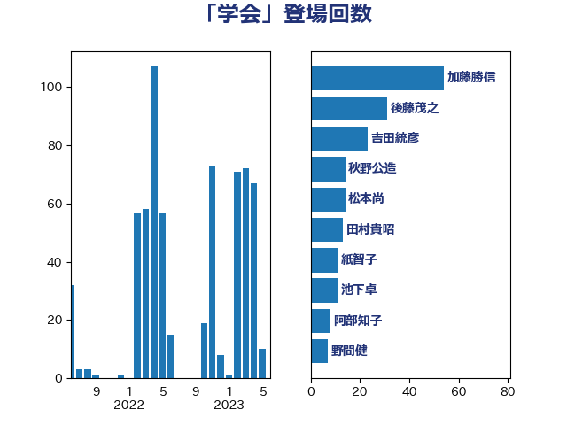

単語「学会」

| 吉田統彦 | 立憲民主党 | 31 回 |
| 後藤茂之 | 自由民主党 | 31 回 |
| 田村憲久 | 自由民主党 | 20 回 |
| 田村智子 | 日本共産党 | 17 回 |
| 秋野公造 | 公明党 | 14 回 |
| 阿部知子 | 立憲民主党 | 9 回 |
| 柳ヶ瀬裕文 | 日本維新の会 | 8 回 |
| 田村貴昭 | 日本共産党 | 8 回 |
| 自見はなこ | 自由民主党 | 8 回 |
| 三原じゅん子 | 自由民主党 | 7 回 |
| 塩田博昭 | 公明党 | 7 回 |
| 萩生田光一 | 自由民主党 | 7 回 |
| 西村康稔 | 自由民主党 | 7 回 |
| 高良鉄美 | 無所属 | 7 回 |
| 塩川鉄也 | 日本共産党 | 6 回 |
| 小池晃 | 日本共産党 | 6 回 |
| 川田龍平 | 立憲民主党 | 6 回 |
| 中島克仁 | 立憲民主党 | 5 回 |
| 加藤勝信 | 自由民主党 | 5 回 |
| 島村大 | 自由民主党 | 5 回 |
| 松本尚 | 自由民主党 | 5 回 |
| こやり隆史 | 自由民主党 | 4 回 |
| 小林鷹之 | 自由民主党 | 4 回 |
| 志位和夫 | 日本共産党 | 4 回 |
| 松沢成文 | 日本維新の会 | 4 回 |
| 梅村聡 | 日本維新の会 | 4 回 |
| 梶山弘志 | 自由民主党 | 4 回 |
| 石田昌宏 | 自由民主党 | 4 回 |
| 吉田久美子 | 公明党 | 3 回 |
| 塩村あやか | 立憲民主党 | 3 回 |
| 宮本徹 | 日本共産党 | 3 回 |
| 山岡達丸 | 立憲民主党 | 3 回 |
| 山本博司 | 公明党 | 3 回 |
| 山添拓 | 日本共産党 | 3 回 |
| 岩渕友 | 日本共産党 | 3 回 |
| 岸田文雄 | 自由民主党 | 3 回 |
| 柴田巧 | 日本維新の会 | 3 回 |
| 福島みずほ | 社会民主党 | 3 回 |
| 青山繁晴 | 自由民主党 | 3 回 |
| 串田誠一 | 日本維新の会 | 2 回 |
| 井坂信彦 | 立憲民主党 | 2 回 |
| 伊藤孝恵 | 国民民主党 | 2 回 |
| 佐藤英道 | 公明党 | 2 回 |
| 倉林明子 | 日本共産党 | 2 回 |
| 吉田とも代 | 日本維新の会 | 2 回 |
| 大口善徳 | 公明党 | 2 回 |
| 小山展弘 | 立憲民主党 | 2 回 |
| 小泉進次郎 | 自由民主党 | 2 回 |
| 尾身朝子 | 自由民主党 | 2 回 |
| 打越さく良 | 立憲民主党 | 2 回 |
| 早稲田ゆき | 立憲民主党 | 2 回 |
| 比嘉奈津美 | 自由民主党 | 2 回 |
| 滝波宏文 | 自由民主党 | 2 回 |
| 矢倉克夫 | 公明党 | 2 回 |
| 石川昭政 | 自由民主党 | 2 回 |
| 福重隆浩 | 公明党 | 2 回 |
| 菅義偉 | 自由民主党 | 2 回 |
| 藤田文武 | 日本維新の会 | 2 回 |
| 西村智奈美 | 立憲民主党 | 2 回 |
| 野田聖子 | 自由民主党 | 2 回 |
| 鈴木義弘 | 国民民主党 | 2 回 |
| 関芳弘 | 自由民主党 | 2 回 |
| 阿達雅志 | 自由民主党 | 2 回 |
| 高木かおり | 日本維新の会 | 2 回 |
| 鰐淵洋子 | 公明党 | 2 回 |
| 一谷勇一郎 | 日本維新の会 | 1 回 |
| 上野通子 | 自由民主党 | 1 回 |
| 下野六太 | 公明党 | 1 回 |
| 亀岡偉民 | 自由民主党 | 1 回 |
| 仁木博文 | 無所属 | 1 回 |
| 伊藤岳 | 日本共産党 | 1 回 |
| 加田裕之 | 自由民主党 | 1 回 |
| 務台俊介 | 自由民主党 | 1 回 |
| 古屋範子 | 公明党 | 1 回 |
| 吉田宣弘 | 公明党 | 1 回 |
| 国光あやの | 自由民主党 | 1 回 |
| 坂本祐之輔 | 立憲民主党 | 1 回 |
| 城井崇 | 立憲民主党 | 1 回 |
| 塩崎彰久 | 自由民主党 | 1 回 |
| 大西健介 | 立憲民主党 | 1 回 |
| 奥野総一郎 | 立憲民主党 | 1 回 |
| 室井邦彦 | 日本維新の会 | 1 回 |
| 平口洋 | 自由民主党 | 1 回 |
| 杉尾秀哉 | 立憲民主党 | 1 回 |
| 東徹 | 日本維新の会 | 1 回 |
| 松原仁 | 立憲民主党 | 1 回 |
| 柚木道義 | 立憲民主党 | 1 回 |
| 森屋隆 | 立憲民主党 | 1 回 |
| 森田俊和 | 立憲民主党 | 1 回 |
| 江島潔 | 自由民主党 | 1 回 |
| 浅野哲 | 国民民主党 | 1 回 |
| 浜田聡 | NHK党 | 1 回 |
| 渡辺周 | 立憲民主党 | 1 回 |
| 田名部匡代 | 立憲民主党 | 1 回 |
| 畦元将吾 | 自由民主党 | 1 回 |
| 石井章 | 日本維新の会 | 1 回 |
| 石井苗子 | 日本維新の会 | 1 回 |
| 石垣のりこ | 立憲民主党 | 1 回 |
| 石川香織 | 立憲民主党 | 1 回 |
| 神津たけし | 立憲民主党 | 1 回 |
| 紙智子 | 日本共産党 | 1 回 |
| 舟山康江 | 国民民主党 | 1 回 |
| 葉梨康弘 | 自由民主党 | 1 回 |
| 赤羽一嘉 | 公明党 | 1 回 |
| 足立敏之 | 自由民主党 | 1 回 |
| 近藤昭一 | 立憲民主党 | 1 回 |
| 野間健 | 立憲民主党 | 1 回 |
| 青木愛 | 立憲民主党 | 1 回 |
| 音喜多駿 | 日本維新の会 | 1 回 |
| 高橋光男 | 公明党 | 1 回 |
| 高橋克法 | 自由民主党 | 1 回 |
| 高橋千鶴子 | 日本共産党 | 1 回 |
| 高橋英明 | 日本維新の会 | 1 回 |
| 高見康裕 | 自由民主党 | 1 回 |
| 高野光二郎 | 自由民主党 | 1 回 |
| 鶴保庸介 | 自由民主党 | 1 回 |